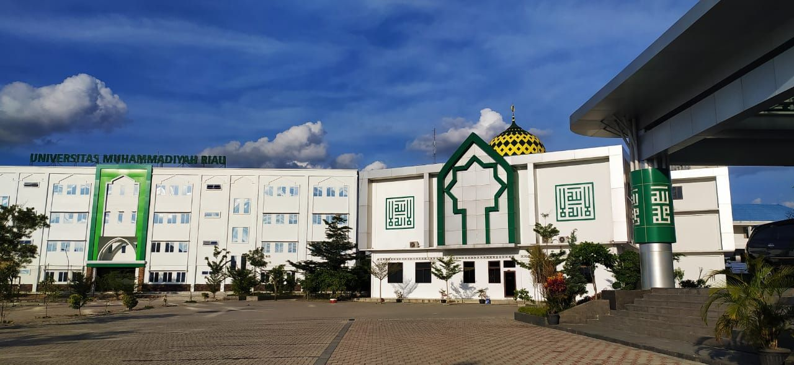

Tentang saya
Nama : Sri Rezeki Setiani
Nim : 210401115
Jurusan : Teknik Informatika
Fakultas Ilmu Komputer
Universitas Muhammadiyah Riau
Bantu Korban Gempa Cianjur, Mapala Universitas Muhammadiyah Riau Salurkan Bantuan Donasi dan Kirim Relawan
Mahasiswa Pecinta Alam (Mapala) Universitas Muhammadiyah Riau (UMRI) menyalurkan bantuan donasi dari masyarakat Pekanbaru dan sekitarnya untuk korban Bencana alam yang terjadi di Cianjur, Jawa Barat. Ketua Mapala Umri Rusdi Harjo mengungkapkan, Mapala Umri selalu berupaya ikut dalam operasi kemanusiaan saat ada bencana mulai dari open donasi, dan menjadi relawan di lokasi. Tujuannya untuk membantu meringankan sedikit dari beban korban yg terdampak bencana alam. "Ini sudah menjadi tujuan mapala umri untuk kemanusiaan, hal serupa ini bukan pertama kali kita lakukan. Semoga dengan bantuan yang kami berikan mampu meringankan sedikit beban dari korban bencana alam," harap Rusdi. Penyaluran bantuan ini diwakili relawan mapala umri Abdurrahman Saleh. Bantuan dalam bentuk uang ini selanjutnya dibelanjakan untuk kebutuhan warga di beberapa desa yakni Desa Buni kasih, Desa Nagrak dan Desa Jambudipa. Dilanjutkan Rusdi, Selain menyerahkan bantuan kepada korban, relawan mapala umri bersama relawan SAR Mapala Muhammadiyah Indonesia (SARMMI) lainnya melakukan psikososial untuk siswa SDN 02 Desa Jambudipa. (Rls)